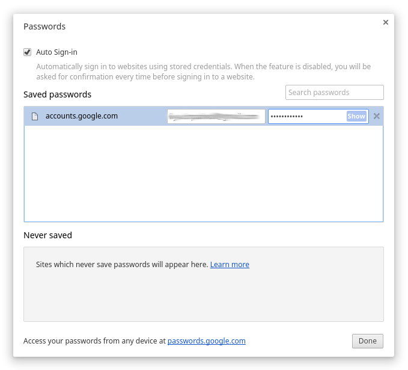

1. "Boss-button"
It's not a secret that many of us sometimes like to visit a few non work related web-sites during work hours. Especially in time of major sports events. But not all bosses approve of this so users are trying to find ways to hide the screen content quickly from prying eyes of others. Well, we've got you covered in Vivaldi. Actually, this feature is more elegant in Vivaldi than it appears: there's no button! To activate this mode just enable «Filter Obscure» in the «Page actions» list. Now just move the mouse cursor out of the browser window and the page content disappeares! Your job is saved!
2. Bookmarks sorting
We like bookmarks! Most of our users have a large collections of links gathered on the web over the years. The problem: from time to time we need to sort all those links to keep our bookmarks managable and usful. Even todays's large displays may not be big enough to view a full list of bookmarks. Vivaldi to the rescue! Just open the bookmark side panel and manage them from there or between tabs and bookmarks panel.
3. Creating Bookmarks
Yes, this feature is a simple one, widly known and available in web browsers. But Vivaldi offers you yet another way to create bookmarks. Sounds familiar? Just open the bookmarks side bar and drag-n-drop the page icon on the appropriate bookmark folder.
4. Changing the start page
Vivaldi allow you to create a few Speed Dials. They can include bookmarks from a certain catergory if that is how you like it. Right now there's no simple way to sort your Speed Dials in the browser interface and setting one of them as default. But there is a solution! Again, open the bookmarks side panel and rearrange Speed Dial folders as you want them and set your own default while you're at it. Easy!
5. Saved passwords viewing
Most of us have tons of accounts spread around on world wide web. Sometimes you need to recall a password you created many months ago. We forget those things at times and we should not store or write them down. So how can you see them in the Vivaldi browser? It's very simple. As Vivaldi is based on a solid core some functions are inherited. This is one of those: Type this address in an address field:
chrome://settings/passwords
Now you can find and read the password for any account. Remember to close this view!

6. YouTube channels in the side bar
If you want to be updated on new videos in a subscribed YouTube channel, just create a web-panel for the channel in the Vivaldi side panel — now new videos are only a click away!

7. Fast cloning the tabs
Do you often clone tabs? Just create a hotkey for this action and forget about the context menu unless that is how you want to do it. This is Vivaldi, remember? Everyone can do everything their own way and now you can clone tabs with a hotkey!
8. Settings as home page
If you want to have access to the Vivaldi settings in one click, just set the internal page vivaldi://settings as home page! Now you can open settings at any time by clicking the Home button. How cool is that?
9. Fast searching the tab
Sometimes it's not easy to find a certain tab if you have a lot open, especially if they are from the same web-site. But in Vivaldi you can just push the F2 key and start typing the page title or URL. Your page will be in the filtered list. Highlight the one you want and hit Enter — you've got it!
10. Zig-zag gesture
Mouse gestures is a common feature in popular browsers. In Vivaldi also of course. Even more so in Vivaldi actually! In our test builds we added a new feature, a mouse gestures editor that allows you to create as many gestures as you can think up. But it's possible that all good combinations of mouse movements are in use. In that case just try the new Zig-Zag gesture! It works!
That's all for now. You will find the stable version of Vivaldi on the main web-site while the test builds are made available in the developers blogs. And don't forget to send your bug-reports and suggestions to us. We need them to be able to make the best browser ever for each and every user, our friends!
Comments (35)
EDIT: btw that filter_obscure isn't perfect. If you have an iframe, it will consider them prior to the whole page you're on. In other words: try this page, you'll see that the whole page will "un-blur" when the mouse is over, but YouTube videos stay blurred until you move over them. Is it intended?
I'm checking your blog many times a day because of you ! (Never a browser did this to me in my life)
Would you please file a bug report on vivaldi.com/bugreport so that the developers can look into it? Thanks in advance for your help!
Web panels streamlines a lot!
A hug from Brazil team Vivaldi
i.imgur.com/bFTTWAl.jpg?1
BIC doesn't hide panel sidebar and tabs preview (if you have them aside), so not-so-secure ;)
Many Thanks
2. Bookmark Sorting: Good, but we need separators
3. Creating Bookmarks: Good enough for me
4. Start Page: Needs more columns and scalable thumbs
5. Saved Password Viewing: Too obscure for non-Geeks. Add it to the GUI
6. YouTube Channels: Web Panels rock.
7. Fast Cloning: I use GestureDown
8. Settings as Home Page: A waste. use shortcut Alt P or whatever
9. Fast Search Tab: Speed Dial for Open Tabs like PDF-XChange Viewer might be better (see image) The thumbnail previews are already generated.
10. Zig-Zag Gestures: A compromise for FlipBack/FlipForward and modifier key combos
www.softerviews.org/Thumbnails.png
Agreed. Would love for Vivaldi to be able to Hide to the Windows tray like the old Opera used to. I had both keyboard and mouse shortcuts set to do this. Very handy.
vivaldi.net/en-US/forum/all/3073-vivaldi-ui-customisations
But seriously, can we have more columns on the SD now?
www.spiralgraphics.biz/viewer/index.htm
Especially 'View Passwords', but is there any chance of putting the 'Show' and 'Delete' buttons further apart? Maybe moving 'Show' over to the left of the row, or add a 'Do you really want to do this?" prompt to the Delete action. Very easy to hit delete by mistake at the moment. :-(
Also is a 'Master Password' to control access to this in the pipeline?
Good idea! This should become sort of a regular section.
someone
Also, some documentation on how exactly auto-sign-in works (I assumed it's just an EFS protected file on Windows) and what are the tradeoffs for keeping it on.
PS: I use F2 to type the nicknames of frequent bookmarklets.
1. Tokenize the input in the quick commands box, so to allow a free word by word search. Example: I open a confluence page in my company's intranet containing info about our load balancer. It would be cool to type "confl load" and see the bookmark/history entry
2. allow the possibility to disable the summoning of the menu via alt key
3. when switching the tabs via ctrl+<number>, make it so pressing ctrl gives a visual clue of the tabs order, for instance by visualizing a badge with the tab number
Great release as usual, by the way. Thanks